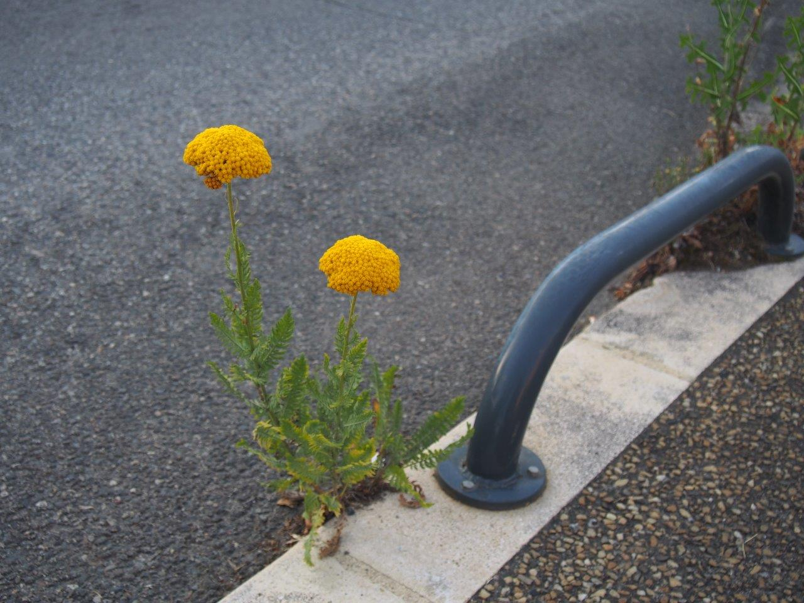

Plantes sauvages en ville
quelle type de plantes trouvons nous dans la rue ?
Discrètes et courageuses, les plantes sauvages trouvent le moyen de s'installer en ville, là où on ne les attend pas. Elles ont un vrai rôle à jouer sur le plan écologique, et, si le citadin passe souvent sans les voir, elles intéressent les scientifiques... et les botanistes urbains !
Les plantes sauvages en ville : une présence discrète
Flore sauvage (ou en tout cas spontanée) et ville semblent si peu compatibles que l'on ne s'attend pas à rencontrer des plantes sauvages dans les rues bétonnées et polluées de nos agglomérations. Et pourtant, elles sont bien là, dans le moindre interstice : entre mur et trottoir, entre les pavés, dans les fissures d'un mur... ou au pied d'un arbre !
Très souvent, le citadin pressé ne les voit même pas. Certes, il regarde éventuellement un massif fleuri dans un jardin public, un alignement d'arbres le long d'une rue ou une pelouse dans un parc, mais les petites fleurettes jaillies spontanément là où on ne les attend pas, et les herbes folles qui colonisent pourtant avec ténacité la moindre surface de terre, elles, passent souvent inaperçu. Et quand il les remarque, c'est pour les qualifier de "mauvaises herbes", en songeant presque une fois sur deux que l'entretien des lieux laisse à désirer ! Sauf si ces sauvageonnes ont la bonne idée de produire de jolies fleurs, colorées si possible : auquel cas, la plante remonte un peu dans l'estime de l'observateur...

Des plantes résistantes et peu exigeantes
Ces plantes sauvages doivent, pour arriver à survivre et se reproduire en ville, se contenter de peu : peu d'espace, peu de terre, peu d'humus, peu d'eau... et peu d'insectes pollinisateurs ! Elles sont capables de s'enraciner dans les pires conditions, et elles parviennent à se faire polliniser et à disséminer leurs graines malgré la pénurie de petites bêtes capables de transporter le pollen d'un plante à l'autre ou de faire voyager les graines. Elles se débrouillent donc comme elles peuvent : elles se pollinisent elles-mêmes (plantes autogames) ou avec simplement l'intervention du vent (plantes anémophiles) ; quant aux graines, c'est souvent le vent qui se charge de les transporter (graines anémochores dont l'exemple le plus classique est celui des akènes de pissenlit qui s'envolent au moindre souffle d'air). Et sans compter le piétinement, le fauchage, les herbicides, l'arrachage... Oui, vraiment, les plantes sauvages qui ont élu domicile en ville ont du mérite... et la vie dure !
Quels rôles joue la flore urbaine ?
Cette flore urbaine joue cependant un rôle important pour la biodiversité. Elle permet à des insectes, des escargots ou des oiseaux de se nourrir, elle leur offre même le gîte et un endroit pour se reproduire. Les plantes contribuent aussi à améliorer la qualité de l'air en absorbant du dioxyde de carbone et certains polluants, à dépolluer les sols et l'eau ; elles permettent de créer localement des micro-climats (en été, même en plein soleil, il fait toujours plus frais sous les arbres ou sur une pelouse que dans une rue goudronnée !). Et puis, elles améliorent le cadre de vie des citadins : que serait une ville sans la moindre feuille ou le moindre brin d'herbe ?
Par ailleurs, même si l'on en a peu conscience, les petites plantes sauvages qui poussent ici et là dans les rues permettent aux espèces végétales de voyager d'un parc à un autre, d'un jardin à une pelouse, d'un bout à l'autre de la cité : ces individus isolés au milieu de leur désert de macadam (les scientifiques parlent de "brèches urbaines") sont comme des relais qui font le lien entre les différentes zones végétalisées (qui sont des réservoirs de biodiversité) que compte la ville. Evidemment, les plantes se disséminent plus facilement le long de "corridors urbains" (zones enherbées, alignements d'arbres, jardinières sur les balcons...) qu'en l'absence de toute trace de terre, d'où l'importance, dans un plan d'urbanisme, de créer ces zones où la nature trouve une place.
 Facebook
Facebook Instagram
Instagram Twitter
Twitter Youtube
Youtube